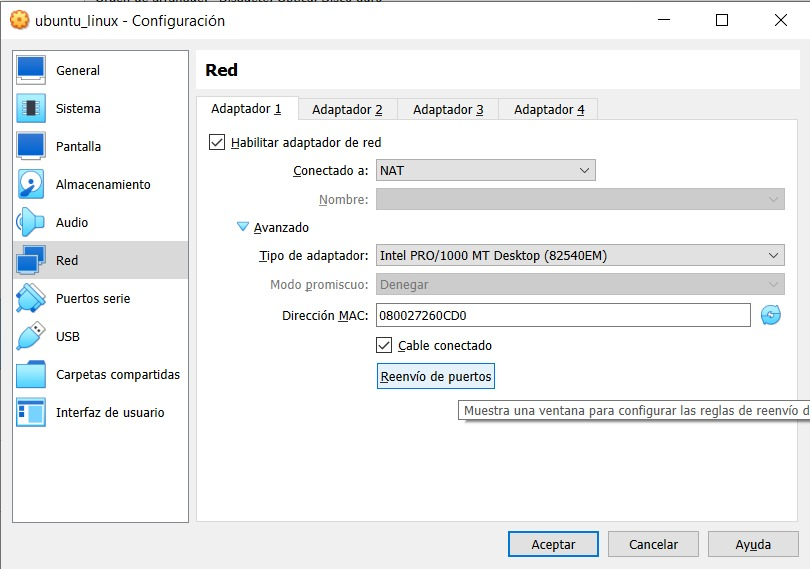
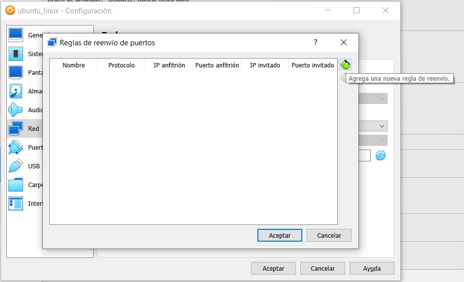
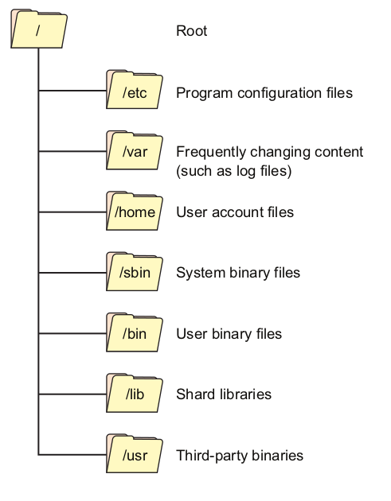

Introductorio a tecnologías de contenedores: Apptainer y Docker.
En este material se presenta una introducción a las Tecnologías de Contenedores, enfocándose principalmente en Docker y Apptainer.
Los Contenedores son producto de la integración varias caracteristicas del kernel, así como del sistema de archivos y de la red. Los Contenedores administran el software que unifican estas características.
De las características del kernel, nos interesa conocer las que son esenciales para aislar procesos. En particular:
- Namespaces : aislan los procesos del contenedor desde la perspectiva de las características del sistema operativo como el montaje del sistema de archivos, administración de procesos, y la configuración de red.
- Control groups (cgroups): limita el uso de los recursos del sistema y prioriza ciertos procesos sobre otros.
- Capabilities : permite a los procesos ejecutar ciertas operaciones sensibles en el kernel así como llamadas al sistema.
- Secure computing mode : restringe el acceso a llamadas al sistema.
Estas características son transparentes en los sistemas Linux. Por tal motivo, inicialmente abordaremos la forma cómo podemos interactuar con el sistema mediante el shell (la linea de comandos, CLI-command line interface). En particular, se presenta la forma cómo se administran paquetes, se configuran usuarios y grupos, se monitorean y controlan procesos y recursos, etc.
Contenido
El materíal está organizado de la siguiente manera:
-
Introducción a Linux
- Instalación de máquina virtual
- Introducción a la linea de comandos
- Administración de paquetes
- Configuración de usuarios y grupos
- Jerarquía de directorios
- Almacenamiento y sistemas de archivos
- Gestión de archivos
- Monitoreo y control de procesos
- Administración y monitoreo de uso de recursos
- Introducción a programación shell
-
Virtualización
- Máquinas virtuales
- Contenedores
- Docker
- Apptainer
Introducción
Instalación de Ubuntu Server en una máquina virtual
Instalación de Ubuntu en VirtualBox
- Prerrequisitos:
- VirtualBox instalado. Descarga instalador de la siguiente liga : https://www.virtualbox.org/wiki/Downloads
- Contar con una imagen ISO de Ubuntu 22.04. Descarga la Server install image de la siguiente liga: https://releases.ubuntu.com/focal/
Configuración de puerto 22 en VirtualBox
Utilizaremos el protocolo SSH para tener acceso remoto a la máquina virtual que creamos por medio de un canal seguro en el que toda la información está cifrada. El puerto TCP asignado al protocolo es el 22. Por default, VirtualBox no tiene habilitados los puertos 22, por lo cual es necesario hacer un cambio en la configuración.
Para hacer cambios en la configuración, debemos apagar la máquina virtual. Una vez apagada, entramos a la opción de configuración y en la opción de "Red", en el Adaptador 1 seleccionamos la opción Reenvío de puertos.

En la pantalla emergente, seleccionamos la opción "Agrega una nueva regla de reenvío".

Definimos la siguiente configuración:

Una vez realizada la configuración de puertos, podemos acceder de forma remota al servidor con la instrucción:
ssh -p 2201 <nombre_usuario>@127.0.0.1
Generación de llaves
- Genera el par de llaves SSH con la instrucción
ssh-keygen
- Seleccionamos enter a la pregunta Enter file in which to save the key.
- No usaremos secure passphrase, por lo que utilizamos enter en las dos opciones siguientes.
- Las llaves pública (
id_rsa.pub) y privada (id_rsa) que fueron generadas se encuentran en la dirección~/.ssh. Para verificar su creación, ejecutamos las siguientes instrucciones:
cd ~/.ssh
ls
Para poder acceder al servidor mediante nuestra llave pública y así evitar colocar el password, copiamos el contenido de la llave pública (id_rsa.pub) en el archivo ~/.ssh/authorized_keys del servidor.
Para imprimir el contenido de la llave pública, desde el equipo host ejecutamos la instrucción:
cat ~/.ssh/id_rsa.pub
El contenido de este archivo lo pegamos en el archivo ~/.ssh/authorized_keys del servidor. Para esto, ejecutamos en el servidor:
nano ~/.ssh/authorized_keys
Instalación de entorno gráfico en el servidor
Para instalar el entorno gráfico GNOME en el servidor, ejecutamos en el servidor las instrucciones:
sudo apt update
sudo apt install gnome-session gdm3
Introducción a la línea de comandos
La línea de comandos, o shell, es la interfaz entre el usuario y los archivos y procesos que definen el estado de la computadora-incluyendo los archivos y procesos del sistema operativo.
Podemos ingresar al shell al abrir una terminal. El shell proporciona una interface de linea de comando (command line interface-CLI) que puede ser utilizada para ejecutar comandos y navegar a través del sistema de archivos del equipo. La línea de comandos también se le conoce como prompt y generalmente es denotado con un signo de pesos ($).
Pero, ¿Qué es exactamente el shell? El Shell es un lenguaje de programación.
El shell es un lenguaje de programación que es ejecutado en la terminal. Al igual que otros lenguajes de programación, el shell:
- Puede recolectar muchas operaciones e integrarlas en una unidad.
- Aceptar insumos.
- Generar salidas.
- Tiene variables y estados.
- Caracteres especiales y nombres reservados.
Al igual que los lenguajes de programación, hay muchos shells. Uno de los shells más utilizados es bash. Otro shell famoso es zsh.

El poder del shell se define por su transparencia. Al proporcionar acceso directo al sistema de archivos completo, el shell puede ser utilizado para efectuar casi cualquier tarea como :
- Encontrar archivos.
- Manipular archivos.
- Instalar paquetes.
- Ejecutar programas.
- Navegar por el sistema de archivos
Sistema de Archivos de Linux
Un sistema de archivos es un conjunto de estructuras de datos que determina la forma como los datos del usuario son organizados en una unidad de almacenamiento. Los usuarios finales son capaces de interactuar con el sistema de archivos mediante métodos de acceso a archivos regulares. La gran mayoría de distribuciones modernas de Linux usan ya sea XFS o Ext4 como sistemas de archivos por default. En ambos casos, estos sistemas de archivos crean conexiones jerárquicas entre archivos individuales y grupos de archivos con ubicaciones identificables (mediante indización) en la unidad de almacenamiento.

¿Por qué necesitamos indizar la organización de nuestros archivos? Las unidades de almacenamiento proporcionan el medio físico de almacenamiento. El sistema de archivos proporciona el mecanismo lógico de organización de la información en esa unidad física de almacenamiento mediante la indización. El sistema de archivos usa la indización para proporcionar la apariencia de un conjunto organizado de directorios y archivos dentro de una división independiente de la unidad de almacenamiento conocida como partición.
Todos los archivos en una partición se guardan en directorios debajo del directorio root (raíz), que está representado por el carácter / (barra diagonal). La forma en que están organizados estos directorios se rige en gran medida por el estándar de jerarquía del sistema de archivos UNIX (UNIX Filesystem Hierarchy Standard -FHS)

Herramientas de navegación en Linux
Las instrucciones más elementales de navegación en Linux son:
lspwdcdcatless
Instrucción ls
Para listar los nombres de archivos y subdirectorios en el directorio actual, utilizamos la instrucción ls. Si además agregamos la bandera l la instrucción muestra el nombre de los objetos, los permisos, el propietario, el grupo, el tamaño, y el time stamp del archivo. Si ejecutamos la instrucción ls -l en el directorio \var, obtenemos la siguiente salida:
[vader@n0 ~]$ ls -l /var
total 8
drwxr-xr-x. 2 root root 6 Apr 10 2018 adm
drwxr-xr-x. 5 root root 44 Oct 30 2020 cache
drwxr-xr-x. 2 root root 6 Oct 1 2020 crash
drwxr-xr-x. 3 root root 34 Feb 17 12:32 db
drwxr-xr-x. 3 root root 18 Oct 30 2020 empty
drwxr-xr-x. 2 root root 6 Apr 10 2018 games
En la instrucción anterior estamos utilizando la ruta absoluta del directorio /var. La ruta o espacio donde se encuentran nuestros archivos está hecho de directorios (folders o carpetas) anidados. En la jerga UNIX, la ubicación de cada directorio (y de cada archivo dentro de él) está dada por el path o ruta. Las rutas pueden ser absolutas o relativas. Una ruta es absoluta si esta empieza desde la raíz del arbol del sistema de archivos. Por lo tanto, las rutas absolutas siempre inician con / (por ejemplo, /var).
Las rutas pueden ser relativas a nuestro directorio de trabajo actual. El directorio de trabajo actual es denotado con un punto (.) mientras que el directorio inmediatamente arriba de este (su padre) es denotado con dos puntos (..).
Instrucción pwd (present work directory)
Pero, ¿en qué directorio de trabajo me encuentro actualmente? La instrucción pwd imprimirá el directorio de trabajo actual:
[vader@n0 ~]$ pwd
/home/vader
Instrucción cd (change directory)
Una vez que tenemos idea de dónde nos encontramos, nos gustaría cambiar de directorio. La instrucción cd nos permite movernos entre directorios al suministrar como argumento la ruta absoluta o relativa a donde deseamos dirigirnos.
Por ejemplo, si queremos dirigirnos al directorio raíz, ejecutamos:
[vader@n0 ~]$ cd /
[vader@n0 /]$
Si eres muy atento, te darás cuenta que el caracter de tilde (~) cambió a /. El shell inicia sesión desde un directorio especial llamado el directorio home. El caracter de tilde (~) es utilizado como un shortcut al directorio home del usuario.
Administración de paquetes
Distribuciones Linux
Los paquetes y sus gestores
En cualquier distribución, los paquetes son el elemento básico para tratar las tareas de instalación de nuevo software, actualización del existente o eliminación del no utilizado. Básicamente, un paquete es un conjunto de archivos que forman una aplicación o una unión de varias aplicaciones relacionadas, normalmente formando un único archivo (denominado paquete), con un formato propio y normalmente comprimido.
Si bien un mismo programa puede estar disponible para miles de distribuciones, el paquete con el cual se instala en cada una de ellas puede ser distinto. Cuando hablamos de paquete nos referimos al formato o extensión del archivo, el cual es usado por el sistema operativo para instalar un programa. Para que la distribución pueda usar ese archivo debe tener también un gestor de paquetes, el cual posee las herramientas para instalar, modificar o eliminar dicho programa.
Algunos formatos de paquetes son:
- .deb: usado por Debian y sus derivados.
- RPM: (Red Hat Package Manager) originario de Red Hat y usado extensivamente por muchas otras como Fedora, OpenSUSE, Mandriva, Mageia y otros.
- MO: de Slax.
- PUP y PET: Puppy Linux.
- .txz: Slackware
Y algunos de los gestores de paquetes más conocidos:
- APT (terminal) y Synaptic (gráfico): usado por Debian y sus derivados.
- Zypper (terminal) y YaST (gráfico): el gestor de OpenSUSE.
- YUM: Red Hat, Fedora, CentOS y Yellow Dog Linux.
- dpkg: creado originalmente por Debian.
- Urpmi: Mandriva y Mageia.
- slapt-get, slackpkg y swaret: diversas “herramientas” que usa Slackware para trabajar con paquetes tgz.
Gestor de paquetes
El uso de paquetes facilita añadir o quitar software al considerarlo una unidad y no tener que trabajar con los archivos individuales. Normalmente, para la instalación de un paquete será necesario efectuar una serie de pasos:
- Previo (preinstalación): comprobar que existe el software necesario, versiones correctas y dependencias.
- Descomprimir el contenido del paquete, copiando los archivos a sus localizaciones definitivas.
- Postinstalación: retocar los archivos necesarios, configurar posibles parámetros del software, adecuarlo al sistema, etc.
Dependiendo de los tipos de paquetes, estos pasos pueden ser automáticos en su mayoría (así es en el caso de RPM y DEB), o pueden necesitar hacerlos todos a mano (caso .tgz).
Dependiendo de la distribución encontramos diferentes gestores de paquetes: apt y dpkg para Debian y Ubuntu; dnf, yum y rpm para RHEL, Fedora y CentOS.
Gestores de paquetes de Debian y sus derivados (Ubuntu, Kali, etc): apt y dpkg
El gestor de software apt (Advanced Package Tool), permite gestionar los paquetes a través de una lista de paquetes actuales y disponibles a partir de varias fuentes de software. La configuración del sistema apt se efectúa desde los archivos disponibles en /etc/apt, donde /etc/apt/sources.list es la lista de fuentes disponibles.
Algunas funciones básicas.
- Instalación:
apt-get install paquete
- Desinstalación:
apt-get remove paquete
- Borrado también de archivos de configuración:
apt-get purge paquete
- Actualización de la lista de paquetes:
apt-get update
- Actualización de la distribución, se pueden usar los pasos combinados:
apt-get update
apt-get upgrade
apt-get dist-upgrade
- Buscar:
apt-cache search paquete
- Paquetes instalados:
apt list --installed
El comando de más bajo nivel es dpkg. Pueden realizarse todo tipo de tareas, de información, instalación, borrado o cambios internos a los paquetes de software.
- Instalación:
dpkg -i paquete
- Desinstalación:
dpkg -r paquete
- Lista de todos los paquetes instalados:
dpkg -l
- Verifica si un paquete está instalado:
dpkg -l paquete
- Lista de archivos de un paquete ya instalado:
dpkg -L paquete
Instalación de R en el servidor
Para instalar R, ejecutamos las siguientes instrucciones:
sudo apt update
sudo apt-get install r-base-dev
Instalación de RStudio en el servidor (opcional)
Para instalar RStudio, ejecutamos las siguientes instrucciones:
sudo apt-get install gdebi-core
wget https://download2.rstudio.org/server/focal/amd64/rstudio-server-2023.12.0-369-amd64.deb
sudo gdebi rstudio-server-2023.12.0-369-amd64.deb
Verificamos el estatus del servicio de RStudio.
sudo rstudio-server status
Ajustamos el reenvío de puertos para poder consumir el servicio de RStudio mediante el protocolo HTTP.
Accedemos al recurso mediante la liga:
http://127.0.0.1:8787/
La siguiente liga es la guía para el administrador de RStudio:
https://s3.amazonaws.com/rstudio-server/rstudio-server-pro-0.99.484-admin-guide.pdf